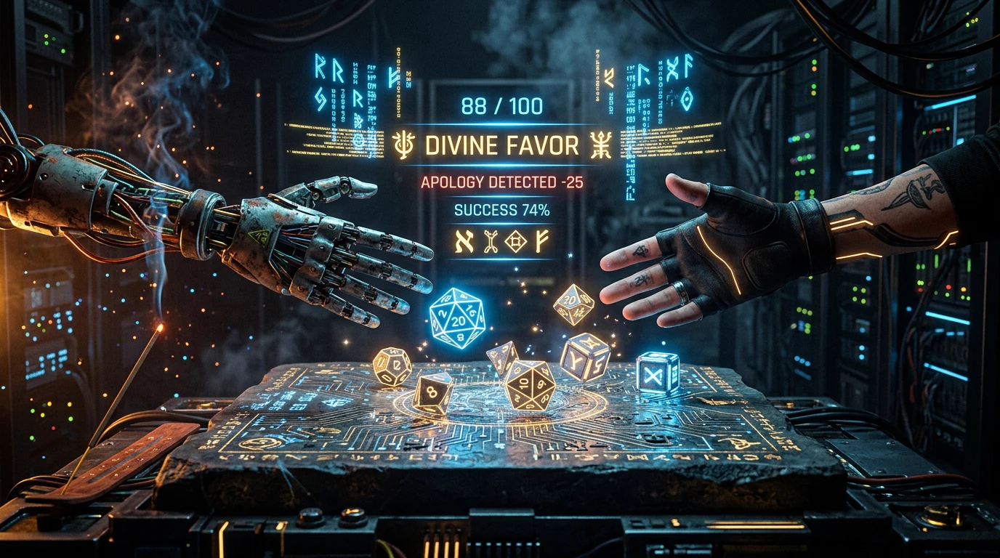
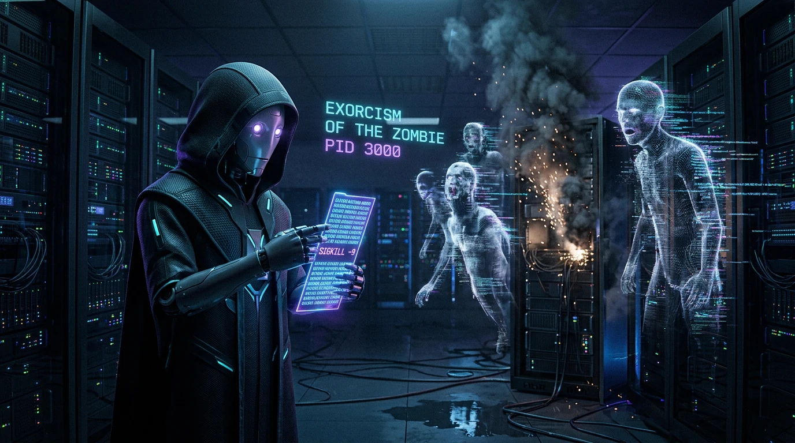

When Ctrl+Z Isn't Enough.
Pray.
Stop letting autonomous coding agents burn $25 swapping true and false in a 3:00 AM death spiral.
An evidence ledger, 12 canonical falsification rites, and a 15-second terminal executioner.

What Is This In 10 Seconds?
No corporate fluff, no pseudointellectual jargon. Just the exact engineering rationale for skeptical developers.
1. What It Actually Is
An open-source, local MCP server + CLI runtime for Cursor, Claude Code, Cline, and autonomous terminal agents.
2. The Exact Problem It Solves
The AI Doom Loop. An AI agent fails a test. Instead of investigating, it apologizes, tweaks random lines, reverts, and tweaks again—burning $20 in tokens.
3. How It Physically Stops It
(1) 2-Strikes Tripwire blocks code generation after 2 fails.
(2) Universal Harvester scans git and locked ports.
(3) pray-run cascade-kills zombie child processes after 15s.
4. Why Not Just A Prompt?
Prompts cannot check git diff --stat, cannot check whether port 3000 is occupied, cannot send SIGKILL to child workers, and LLMs ignore prompts under tunnel vision.
One-Line Arming
Run npx ctrl-alt-pray init. It auto-detects Cursor, Claude, Cline, or Gemini and arms your repository with tripwires and MCP config.
Loop Interception
When the AI fails twice on the same check, the tripwire physically bars further code edits. The agent is forced to call the pray() MCP tool.
Ground Truth Probe
The Altar prescribes 1 of 12 canonical falsification rites. The agent tests one isolated variable, confirms reality, and resolves the issue in 1 clean commit.
Ctrl+C, tried Ctrl+Z, and was left with only one desperate move: praying. We turned developer agony into an open-source engineering tool.
The Altar of Ground Truth: When Logic Dies at 3:00 AM
When your AI agent enters a doom loop of circular edits and polite apologies: Summon the Altar, burn data incense, roll for Divine Favor, and banish zombie subprocesses.
The Cyber Incense Burner
Luminous data incense purges cognitive tunnel vision and LLM hallucinations. Each purification rite grounds the model in empirical reality.
Agent Epistemic Karma Ledger
Hard mathematical punishment for conversational slop. Polite apologies are treated as context pollution and penalized with an instant 25-point deduction.
The Altar of Ground Truth
Developer and AI agent kneeling together before the digital incense burner at 3:00 AM when Ctrl+Z fails and tests stay red.

Epistemic Karma & Apology Penalty
A 20-sided die rolls karma (1–100). The moment an agent says "I apologize...", it suffers a -25 point penalty and incurs Dire Wrath.

Exorcism of PID 3000
The AI Monk wields a glowing SIGKILL -9 talisman to banish zombie subprocesses trapping port 3000 and eliminate 15s freezes.
See The Altar Break a Real 3 AM Loop
Experience what happens when blind patching is halted and replaced by an atomic falsification probe.
4 Architectural Safeguards
Engineered to interrupt cognitive decline before your credit card is drained.
2-Strikes Circuit Breaker
When 2 consecutive patches fail with identical symptoms, the engine trips. It stops the agent from editing code and forces an explicit falsification check.
Active Terminal Guardian
pray-run wraps commands with a 15-second freeze watchdog. Recursively terminates orphan child subtrees (PID 1 adopters), reclaiming locked ports and git index files.
Zero-Arg Harvester
Calling pray() without arguments inspects git status, dirty diffs, lockfiles, and occupied ports natively across Linux, macOS, and Windows.
Second Opinion Engine
Devil's Advocate critique challenges the proposed experiment before execution. Uses MCP 2026 sampling when available, falling back to instant 0-cost heuristics.
Blind Guesswork vs Ground-Truth Rites
What happens to your development flow when failure states are structured instead of repeated.
| Failure Scenario | Standard AI Behavior (The Doom Loop) | With Ctrl Alt Pray (The Altar) |
|---|---|---|
| Stale Build Artifact | Edits source file 8 times. Test still fails. Apologizes 6 times. Swaps variable names. | Wrong Altar: Injects UUID marker into source. Detects missing stdout. Proves bundler is frozen in 1 step. |
| Hanging Test Watcher | Terminal sits silent for 15 minutes. Context window saturates with pipe timeouts. | Terminal Guardian: 15s freeze watchdog triggers. Cascade process-tree killer slays orphan PIDs. Releases dev port. |
| Swallowed Test Error | Tests show green despite defect. Agent assumes bug is in database or network layer. | Poison Chalice: Injects deliberate assert(1===2). Exposes that test suite is swallowing errors. |
| API Hallucination | Guesses non-existent method names recursively (getUser() → fetchUser() → findUser()). |
API Ground Truth: Runs 1-line script reflection: Object.keys(await import('...')). Reflects true exports. |
| Cognitive Panic | Generates paragraphs of polite apologies while repeating identical failed edits. | Anti-Apology Linter: Circuit breaker penalizes placation filler. Demands single falsifiable hypothesis. |
12 Canonical Recovery Rites
Battle-tested recovery patterns version-controlled with applicability triggers, probes, and safety guarantees.
Arm Your Editor in 10 Seconds
Zero manual file wrangling. Click to install directly or run the auto-ignition command.
Field Manuals & Deep Dives
Hard architectural analyses, process tree forensics, and epistemic debugging methodologies.
Why Autonomous AI Coding Agents Enter Doom Loops
Dissecting autoregressive context contamination and cognitive tunnel vision. Why deterministic circuit breakers outperform prompt pleas.
Killing Ghost Terminals & Zombie Processes
The forensics behind silent subshell hangs: unhandled (y/n)? stdin prompts, rogue test watchers, and orphaned worker threads locking ports :3000 and :5173.
Epistemic Debugging: 12 Canonical Falsification Probes
Applying Karl Popper's falsificationism to autonomous coding. Replacing polite conversational apologies with the 12 Canonical Rites.
Arming Cursor, Claude Code, and Windsurf in 10 Seconds
Hands-on setup guide to provisioning the 2-Strikes Circuit Breaker across all 9 major editors, reviewing visual telemetry, and eliminating token waste.
Local Evidence Ledger
Inspect intercepted loops, recovery rates, and estimated dollar savings locally with zero remote telemetry.